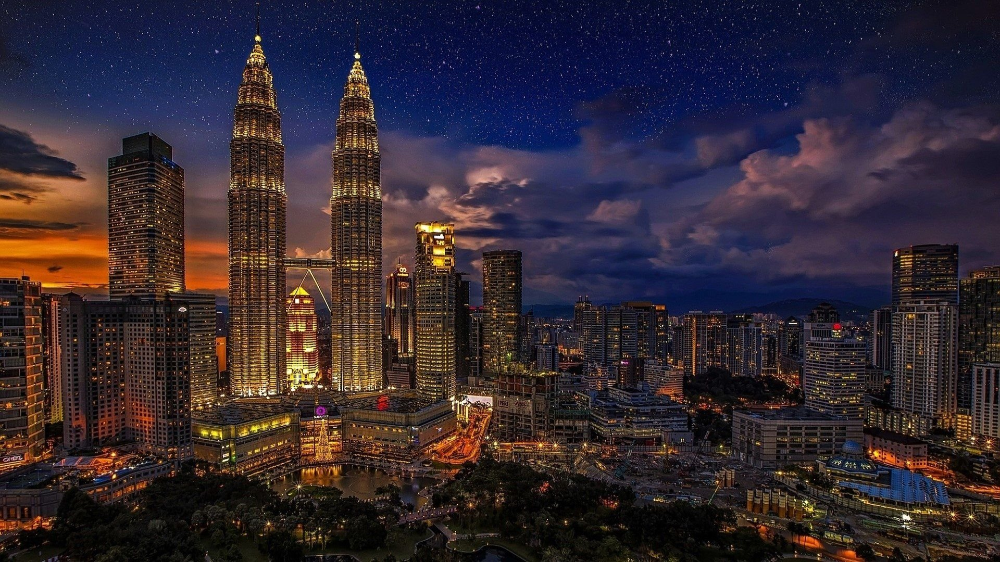
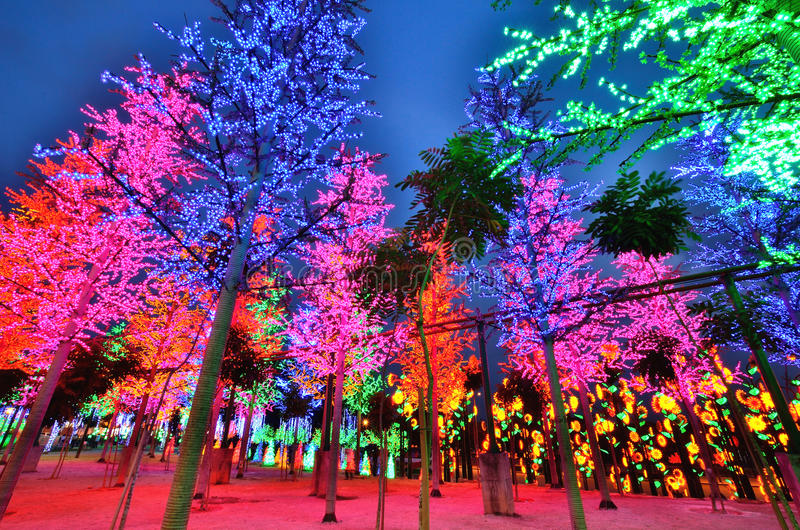

Malaysia ialah satu negara yang mempunyai banyak tempat-tempat menarik untuk dilawati.Antaranya ialah klcc.
1.Menara Berkembar Petronas (Kuala Lupur)
Menara Berkembar PETRONAS di Kuala Lumpur, Malaysia ialah sepasang menara berkembar yang pernah menjadi bangunan tertinggi di dunia sebelum diatasi oleh Burj Khalifa dan Taipei 101. Sungguhpun begitu, kedua-dua menara ini masih merupakan menara berkembar tertinggi di dunia dan juga merupakan bangunan tertinggi pada abad ke-20. Kini, Menara Berkembar Petronas merupakan bangunan ke-11 tertinggi di dunia. Menara Berkembar Petronas memegang gelaran bangunan tertinggi dari tahun 1998 hingga 2004 dari segi ukuran dari aras pintu masuk utama hingga atas struktur, iaitu rujukan ketinggian asli yang digunakan oleh pertubuhan antarabangsa Majlis Bangunan Tinggi dan Habitat Bandar sejak tahun 1969 (tiga kategori ketinggian tambahan diperkenalkan ketika menara ini hampir disiapkan pada tahun 1996).[3] Menara berkembar ini merupakan mercu tanda dan ikon Kuala Lumpur, bersama-sama Menara Kuala Lumpur yang terletak berdekatan. Menara Berkembar Petronas telah majlis pembukaan secara rasminya oleh Perdana Menteri Malaysia ke-4, Mahathir bin Mohamad sempena ulang tahun Petronas ke-25 dengan tajuk pesta perak dan Hari Kemerdekaan Malaysia ke-42 pada 31 Ogos 1999.
2.A Famosa (Melaka)

Kota A Famosa (bermaksud "Yang Termasyhur" dalam bahasa Portugis) telah dibina oleh Portugis sebaik sahaja berjaya menawan Melaka pada tahun 1511. A Famosa terletak di Bandar Hilir, Melaka bersebelahan replika Istana Kesultanan Melaka dan Gereja St. Paul. Ia merupakan seni bina Eropah tertua yang masih tinggal di Asia. A Famosa merupakan nama menara yang dibina oleh orang Portugis selepas menakluk Melaka pada 1511.[1] A Famosa sebahagian daripada Kota Melaka (Fortaleza de Malaca) yang mengambil masa selama 5 bulan untuk dibina. Akibat suhu panas terik dan kekurangan makanan, ramai buruh paksa yang mati ketika membina kota tersebut. Bahan bagi membina kota tersebut diambil dari runtuhan masjid dan bangunan lain.
3.I city (Shah Alam)
i-City atau i-City Selangor (dahulunya dikenali sebagai Bandar Sumur) ialah sebuah perbandaran baru yang terletak di dalam kawasan Lembah Klang, Selangor, Malaysia. Lebih tepat lagi pekan baru ini terletak di Seksyen 7 Shah Alam berdekatan Sungai Rasau yang terletak di antara Bandar Baru Klang, Klang dan Shah Alam. Jaringan jalan raya dari/ke I-City dihubungkan ke Lebuhraya Persekutuan. Pekan baru ini dahulunya merupakan tapak bagi pusat pameran "Pengembaraan Angkasa Lepas Bandar Sumur" (bahasa Inggeris: Sumur City Aerospace Adventure) yang berlangsung pada tahun 1995. Kini, pekan ini dipenuhi pokok-pokok tiruan yang dipasang lampu berwarna-warni.